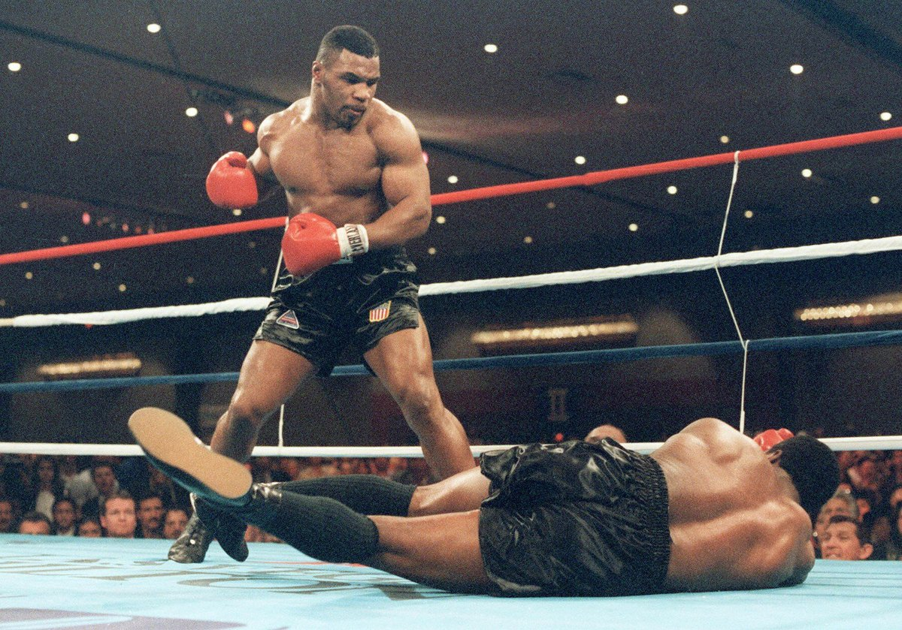
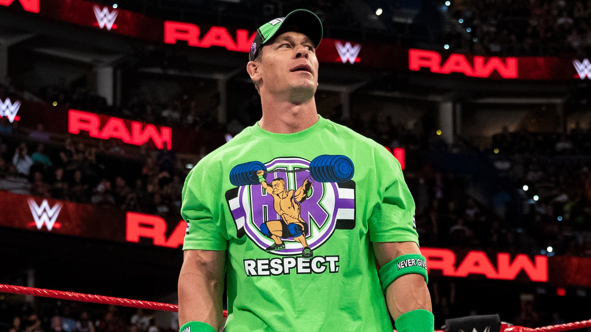

Люди которыми мы вдохновляемся и восхищаемся
Чак Норрис
По официальной информации, он был шестикратным непобежденным чемпионом мира по версии World Professional Middle Weight Karate Champion.

Циган Микки
Чемпионом по кулачным боям среди цыган в фильме «Большой куш».

Майкл Джерард Тайсон
Один из самых известных и узнаваемых боксёров в истории.
Национальный Олимпийский чемпион США среди юниоров в первом тяжёлом весе.

Джон Феликс Энтони Сина
13-кратный чемпион WWE и 3-кратный чемпион мира в тяжёлом весе.
